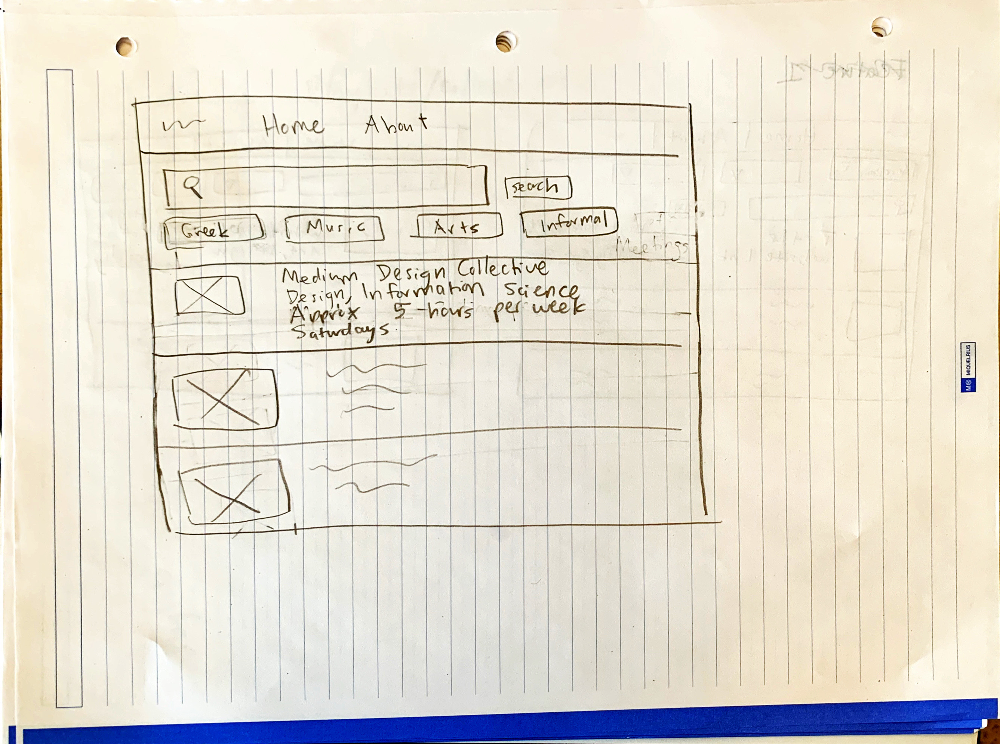
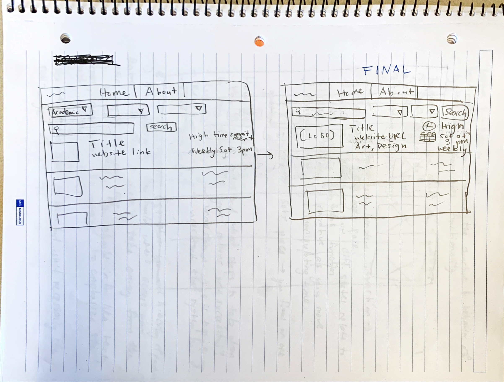

What will your collection be about? What types of attributes will you keep track of for the things in your catalog? 1-2 sentences. My collection will be a catalog for professional or career-related clubs and student organizations at Cornell. I will keep track of the name of each club or student organization, the type of career the club is related to, its mission, and website link.
Tell us about your target audience(s). My target audiences will be students who are interested in joining a new club on campus and the members of clubs who want their club to be included on my catalog. It's important that the catalog isn't overwhelming and doesn't discourage students from wanting to join a club. Additionally, it's important that club members feel that their website is accurately and fully represented on my catalog.
Review some existing catalog that are similar to yours. List the catalog's you reviewed here. Write a small reflection on how you might use the design patterns you identified in your review in your own catalog.
I will include the search bar and categories the user can filter by at the top of the page like Cornell CampusGroups did. Then, the search bar will be the first thing the user sees. This is important because most users will probably want to use the filter or search functionality instead of searching through the entire list of clubs. They will want to filter the clubs to only see the clubs related to their major or career path. Instead of just displaying the URL, each club also has a button for their website so the user can easily visit it. The user must click on the name of the club to be directed to a page with more information about it. This is a better alternative to displaying the description of every club in the catalog, which would look crowded and dense.
Document your design process. Show us the evolution of your design from your first idea (sketch) to design you wish to implement (sketch). Show us the process you used to organize content and plan the navigation, if applicable. Label all images. All labels must be visible in VS Code's Markdown Preview. Clearly label the final design.  First Design Sketch. Filters are below the search. I put the search bar at the top so the user knows it exists and understands that they should use it. I made sure to list the name of the club first before any other information. I included the title of the website on the navigation bar and an option to move the home page or an about page. I decided not to add an about page because the website is self-explanatory.  Second sketch on the left and final sketch on the right. Decided to change filters into dropdown menus and changed placement of dropdown menus to be next to the search bar because most users will use filters when searching. Decided to use icons to show the values instead of text only to make it more legible.
Take this time to reflect on what you learned during this assignment. How have you improved since Project 1? What things did you have trouble with? I have improved in considering the usability of an interface, how to prioritze information that the user wants through design, and how to think of the information users want most. I had trouble with resisting the urge to just erase parts of my design while drawing it. Instead, I should finish a full iteration of the design and make changes in the next iteration to show my progress and also test every idea I have and see how it looks before eliminating it as an option.